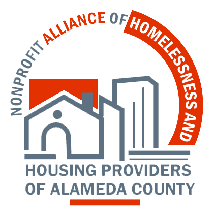

Alameda County's nonprofit homelessness and housing providers — organized, unified, and advocating together for the communities we serve.
We move beyond reactive scrambling to coordinate proactive advocacy on funding, contracting, and policy — giving providers a unified voice with county and state leaders.
Members share solutions, provide consultation, and collaborate through partnerships and work groups — strengthening the entire system of care across the county.
Together we advocate for equity-centered services, adequate program funding, and contracting practices that support healthy nonprofits and a healthy workforce.
In the face of federal funding uncertainty, Alameda County's service providers are coming together. Moments of uncertainty demand collective action.
Become a Founding Member